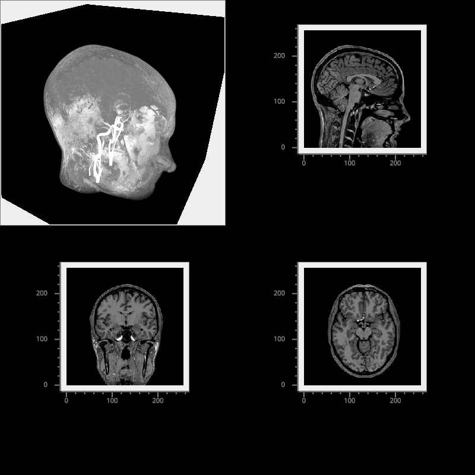

Note
Go to the end to download the full example code
Multi-view Volume Plot#
Plot various views of a structural MRI.
import numpy as np
from vispy import io, plot as vp
fig = vp.Fig(bgcolor='k', size=(800, 800), show=False)
vol_data = np.load(io.load_data_file('brain/mri.npz'))['data']
vol_data = np.flipud(np.rollaxis(vol_data, 1))
vol_data = vol_data.astype(np.float32)
clim = [32, 192]
texture_format = "auto" # None for CPUScaled, "auto" for GPUScaled
vol_pw = fig[0, 0]
v = vol_pw.volume(vol_data, clim=clim, texture_format=texture_format)
vol_pw.view.camera.elevation = 30
vol_pw.view.camera.azimuth = 30
vol_pw.view.camera.scale_factor /= 1.5
shape = vol_data.shape
fig[1, 0].image(vol_data[:, :, shape[2] // 2], cmap='grays', clim=clim,
fg_color=(0.5, 0.5, 0.5, 1), texture_format=texture_format)
fig[0, 1].image(vol_data[:, shape[1] // 2, :], cmap='grays', clim=clim,
fg_color=(0.5, 0.5, 0.5, 1), texture_format=texture_format)
fig[1, 1].image(vol_data[shape[0] // 2, :, :].T, cmap='grays', clim=clim,
fg_color=(0.5, 0.5, 0.5, 1), texture_format=texture_format)
if __name__ == '__main__':
fig.show(run=True)
Total running time of the script: (0 minutes 2.903 seconds)